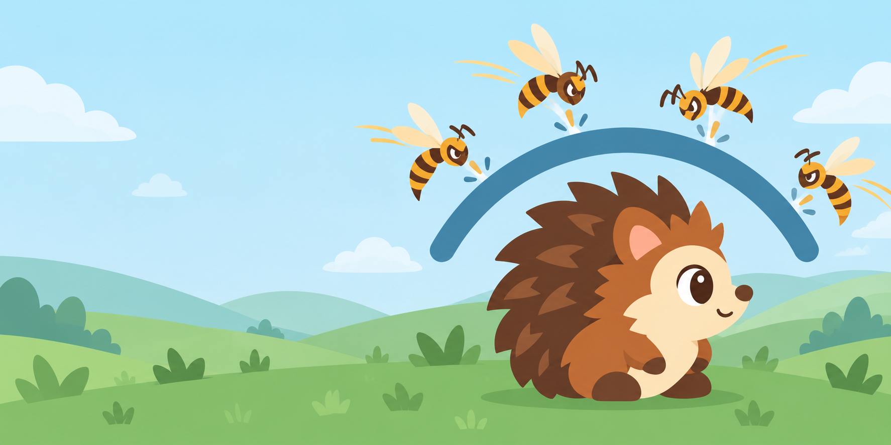
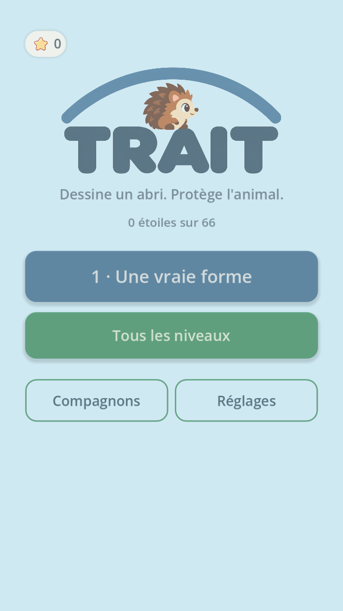
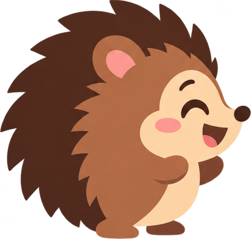
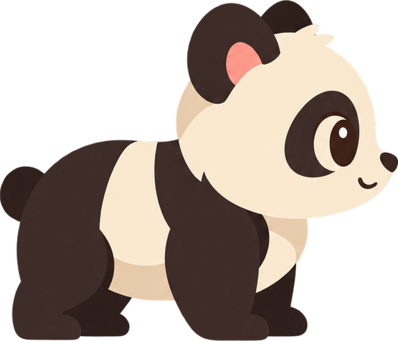

Dessine ton abri.
Ton encre est limitée. À toi d’imaginer une forme qui ferme les accès.
PUZZLE PHYSIQUE · FREEMIUM SANS FRICTION
Dessine autour du hérisson. Tiens bon pendant l’assaut. Facile à lancer, malin à maîtriser.

TRACE
Trois gestes. Un drôle de puzzle.
Ton encre est limitée. À toi d’imaginer une forme qui ferme les accès.
Les guêpes se mettent en mouvement. Elles cherchent vraiment une ouverture.
Ton dessin tombe, glisse et bascule. Seule une construction solide protège ton compagnon.
Le freemium, en toute clarté
Joue les trois premiers niveaux gratuitement, sans compte et sans publicité. Si tu veux prolonger l’aventure, le jeu complet se débloque par un achat unique, sans abonnement.
Le jeu d’abord.
Teste le dessin, l’encre et la physique avant de décider.
Une seule fois.
Le déblocage complet est un achat ponctuel via l’App Store.
Les compagnons restent optionnels.
Hérisson, panda, renard, chat et nouveaux amis ; aucun avantage de jeu.
Sur iOS, les achats passent par l’App Store. Le prix affiché par Apple fait foi ; aucun abonnement n’est proposé.
Un petit monde à protéger
Change de compagnon, d’encre ou d’ambiance. Les étoiles récompensent tes réussites ; elles ne sont jamais dépensées.
Voir les questions fréquentes →

Pas de compte. Pas de pub. Juste un trait.